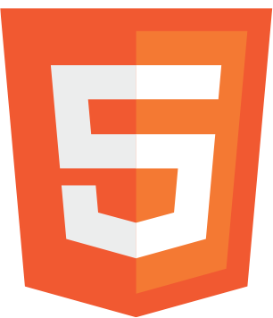
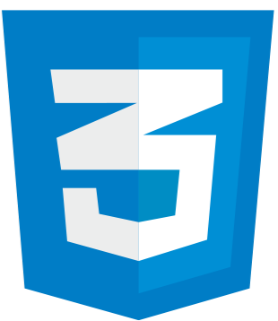
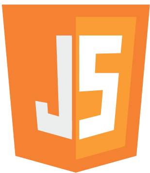

<header class="profile-header">
    <nav class="nav-menu">
        <button class="menu-toggle" aria-label="Abrir menu">
            <span></span>
            <span></span>
            <span></span>
        </button>
        <ul>
            <li><a href="#">Início</a></li>
            <li><a href="#">Sobre</a></li>
            <li class="submenu">
                <a href="#">Matérias</a>
                <ul class="dropdown">
                    <li><a href="#">1º Semestre</a></li>
                    <li class="submenu">
                        <a href="#">2º Semestre</a>
                        <ul class="dropdown">
                            <li><a href="#">JavaScript</a></li>
                            <li><a href="#">Banco de Dados</a></li>
                        </ul>
                    </li>
                </ul>
            </li>
            <li><a href="#">Contato</a></li>
        </ul>
    </nav>
    <div class="tech-logos">
        
        
        
    </div>
    <div class="profile-info">
        <h2>Vanessa Pains Fonseca</h2>
        <p>2º Período - Sistemas para Internet</p>
        <p>IFTM - Uberlândia - Centro</p>
    </div>
</header>
